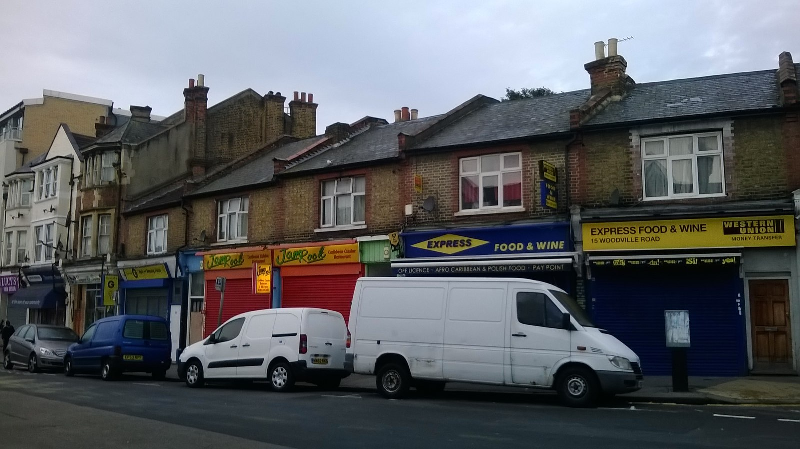

Kitchens on J'Toye

Three steps, no app
-

Find a kitchen — search by postcode or dish; every kitchen shows its hygiene rating and hours.
-

Order and pay — delivery or collection; card, or cash on collection where the kitchen allows it; allergens on every item.
-

Follow it — a tracking page from the kitchen to your door; no account needed.
What you can trust
- HygieneUK food-hygiene rating, verified when the kitchen joins.
- AllergensAllergen information on every item, with "may contain" where the kitchen says so.
- No appNo app to download. A web page, reached by link or QR.
Built around the service you already run
For kitchens


- Slots with a cap"Saturday 12:00–14:00, 20 orders", closed at the cutoff
- One cook sheet per serviceevery order's lines totalled by dish
- Natasha's Law labelsprinted from the product, 14 allergens emphasised
Run your food business
Take orders, run the kitchen, go live in a day.